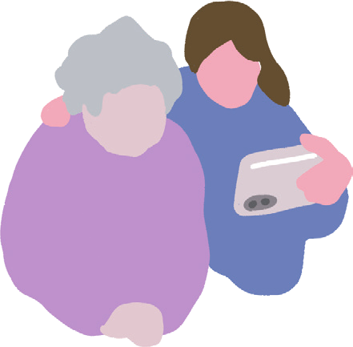
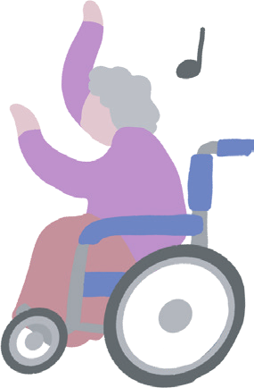
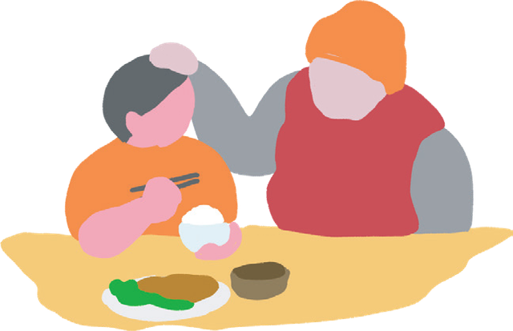
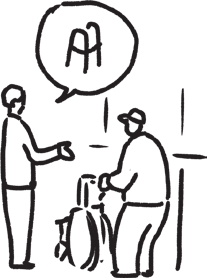
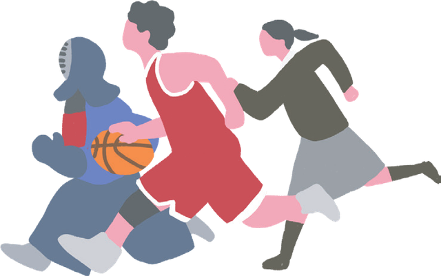
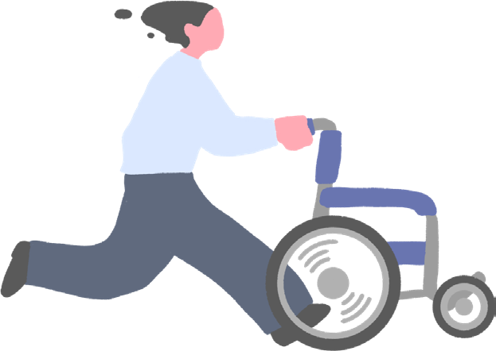

長野の空気を吸いに、
軽井沢へ来ませんか。
将来がまだぼんやりしている1・2年生も、
進路を決める前に視野を広げたい3・4年生も歓迎です。


LOCAL LONG LIFE は、長寿の国・長野で生まれた1日完結のインターンシップです。
高齢者体験ギアを身につけ、「おじいちゃんがこの家でずっと暮らせるプラン」を考える。そのあとは視点を自分に向けて、これから先の長い人生をどう働き、どう暮らしたいかを描きます。
AIが当たり前になる時代に、人にしかできない仕事とは何か。
その答えのヒントを、軽井沢の森の中で一緒に探しましょう。


重り・視野狭窄メガネなどの高齢者体験ギア、車椅子、ベッド体験。段差の恐怖や見下ろされる圧迫感を、五感で掴みます。
介護×福祉用具×住環境。体感した課題をもとに、実際に家へ福祉用具を設置しながらプランを作り、実演を交えて発表します。
社員トークライブと社員メンターとの壁打ちを通じて、価値観と仕事の魅力を掛け合わせたマイキャリアプランを作ります。

ミッション説明のあと、高齢者体験ギアや車椅子・ベッドを体験。ご利用者の「不安」と「圧迫感」を知る時間です。

昼食と社員交流のあと、チームで「この家で、ずっと暮らせるプラン」を作成・発表。現場社員がプロの視点でフィードバックします。

2040年問題、介護業界の成長、AI時代に高まる「感情労働」の価値。社員トークライブでは、この街での暮らしと働き方を聞けます。

どんなライフスタイルを送りたいか。この地域にどんな価値を届けられそうか。メンターと壁打ちをして全体発表、講評までを行います。
あなたの人生経験が
誰かの人生の支えになる。
ポスターをタップすると、大きく読めます
この家で、ご利用者さんが
暮らせるプランを提案してください。

正解はありません。体感したリアルな課題から、
あなたたちのチームだけの答えをつくってください。
将来がまだぼんやりしている1・2年生も、
進路を決める前に視野を広げたい3・4年生も歓迎です。